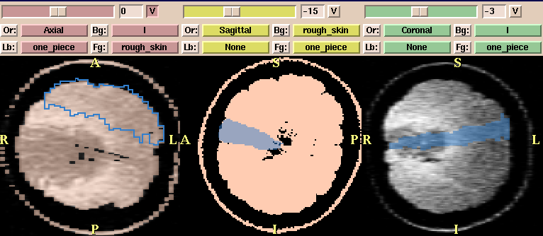
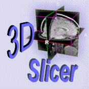
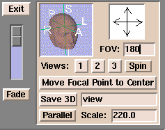

You have control over the annotation that the slicer displays over your images
when you move the mouse over the scene to edit/view your data. To change this
feature, put the left mouse over the interface and select the More: button and
choose the Anno choice from the list. You will see a new panel and 7 choices.
The top four adjust the 3D view scene and the bottom three affect the slice
views. These choices are entirely up to the user. You can decide which options
are best for you by
these by trial and error. Many people keep the defaults as they are but a lot
of people prefer to turn Crosshair off as it blocks the view under the mouse.
You can save your options by using mouse on the File tab at the top of the
interface and selecting the Save Current Options tab. This will save your
options to a file called
2. Controlling the 3D portion of the scene
Control over the 3D portion of the scene is fairly straightforward as each
mouse button has a distinct function.
- left button rotates the scene
- middle button will move the scene left and right and up and down
- right button will adjust the scaling or size of the scene
2-1 Controlling the slices portion of the scene

The Slices Interface and Scene Display
The slices portion of the scene is very flexible and powerful and allows
a variety of ways to display multiple datasets. Manipulating the slices scene also affects
the 3D scene. When your data is loaded, a view from all 3 major axes is displayed in the three separate windows. Here are some of the functions of the slices scene:
- To make the slices visible in the 3D scene as
well, click the V button next to the slider and that plane will become visible
on the 3D scene. This is useful to view the orientation of multiple
datasets and models with respect to each other.
- To move through the volumes, simply move the
slider above each of the planes. If this plane is visible,(see step above)
then the 3D scene will be updated as well.
- You can view multiple datasets (up to three) at one time. After you
have loaded your datasets into the slicer
The slices display is controlled by four tabs on each of the three views.
The tabs stand for:
- Bg: the dataset to display in the background
- Fg: the dataset to display in the foreground
- Lb: you can load a labelmap which will have the label outline
overlaid on top of the background and foreground display
- Or: change the default orientation of the data
To change the data that is displayed, click the left mouse over the tab
and choose the dataset that you want associated with that tab.
To change the window/level for one of the views, click the right mouse over
the tab. A window will pop up and show sliders that you can adjust to
optimize the display.
In the view above we have three different combinations of datasets displayed:
In the first (Axial) view, the grayscale data is displayed in the background, the
skin in the foreground, and the label of a single slice of orange is loaded as
a labelmap (blue outline). In the second(Saggital) view, there two segmented datasets are
loaded, the skin in the background and the slice in the foreground. The third
(Coronal) view is a grayscale and segmented orange slice combination.
2-2 Controlling the scene from the user interface panel
When you move the cursor over the Slicer icon which is part of the user interface panel:

The Slicer icon
The following panel appears:

Secondary Scene Controller
There are several useful features of the scene controller shown above.
- The slider on the left between the Fade and Exit buttons is a very useful
feature. When you have data loaded in the foreground and background, you can
use this slider to blend the datasets. When the slider is at the
bottom, it will display the background dataset, and when it is at the top
it will display the foreground dataset. It will blend the two datasets when the
slider is in between the top and bottom. This slider will have no effect unless
there is a foreground and a background dataset loaded. This feature is
particularly when you are registeringtwo datasets and want to see how accurate the registration is.
- The FOV label. The FOV stands for Field Of View. This describes the "size"
of your image. Sometimes you will need to adjust this value. If your Pixel Size is small, then the FOV will be small and the images that the slicer displays will be small. Change FOV to a larger value until it fills the window. Conversely,
if the Pixel Size is very large the image will not fit in the window so you will need to change the FOV to a smaller value.
- The arrows pointing north, south, east, and west can rotate the 3D scene in
the appropriate direction. Click on the arrow and the 3D scene will rotate in that
direction
- The Parallel tab will toggle the projection between parallel and perspective projections. A parallel projection preserves parallel lines, making the object
appear the same size regardless of how far away it is from the viewer. A perspective projection allows closer objects to appear larger than objects farther
away.
- The Save 3D button will save the current 3D scene. Change the word view to
be the word that you want the 3D scene to be called. It is important to note
here that the slicer will attempt to save the scene to the directory
from which you started the slicer so you need to be careful where you
start the slicer! If you dont have privileges to write to this directory, the
scene wont be saved and slicer will send no message.
the wi
- You can use the icon of the head to rotate the 3d scene by clicking on the
letters (R)Right, (L)Left,(P)Posterior,(A)Anterior,(I)Inferior, and (S)Superior.